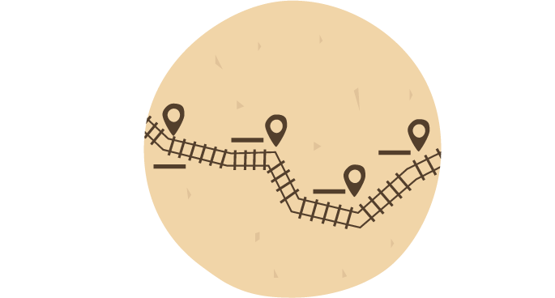
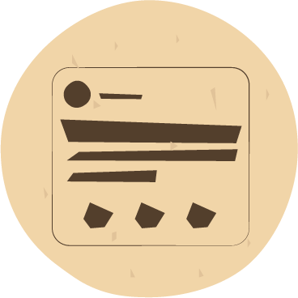

Selecione uma estação no mapa

Poste uma memória na estação selecionada

Compartilhe a sua memória no Facebook
Cadastro
1. Para cadastrar-se clique em "Cadastro", localizado na barra superior.

2. Em seguida, preencha o formulário com seus dados e clique no botão "Cadastrar"

Login
1. Para realizar o login clique em "Login", localizado na barra superior.

2. Em seguida, preencha o formulário com email e senha cadastrados e clique no botão "Entrar"

Configurações de Perfil
1. Clique em seu nome, localizado na barra superior. Logo após clique em "Editar perfil".

2. Surgirá um formulário. Para alterar a foto de perfil selecione o botão "Adicionar foto". Para mudar o nome de usuário,
adicionar estado e cidade preencha o formulário. Clique em Salva e suas informações de perfil serão atualizadas.

Como postar uma memória
1. Selecione uma estação no mapa.

2. Para postar um relato, digite no campo de texto e clique em "Postar".

3. Para postar uma foto, selecione a aba "Foto", clique no botão "Escolher arquivo",
digite a legenda e clique em "Postar".

4. Para postar uma vídeo, selecione a aba "Vídeo", cole a URL no campo indicado,
digite uma legenda e clique em "Postar".